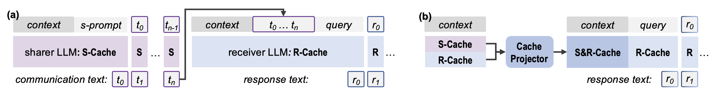
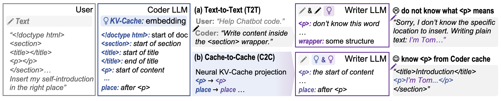
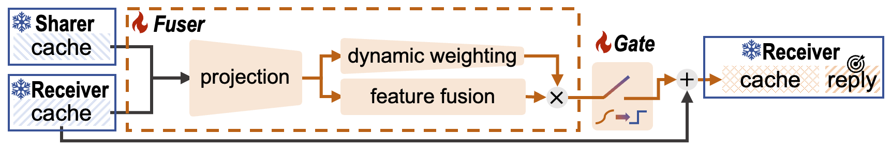

Direct semantic communication between LLMs through KV-Cache projection and fusion — faster and more accurate than text-based communication.
Overview
Multi-LLM systems combine diverse models to leverage their complementary strengths. But current text-based communication creates bottlenecks.

Motivation
Text-based communication between LLMs has fundamental limitations
High-dimensional semantic representations are compressed into linear text sequences
Natural language is inherently vague and can be misinterpreted by the receiver
Slow token-by-token generation is required for every communication exchange

Example: Text-to-Text communication loses structural semantics through ambiguous descriptions. Cache-to-Cache transfers precise semantic understanding directly.
The Discovery
Oracle experiments reveal three key findings that motivate Cache-to-Cache communication.
Architecture

C2C Fuser: Projects and fuses KV-Caches from Sharer into Receiver through (1) Projection, (2) Dynamic Weighting, and (3) Learnable Gating modules.
Concatenates and processes KV-Caches from both models through projection and feature fusion layers
Input-aware head modulation layer for adaptive information flow between models
Per-layer trainable gates that select which layers benefit from cache fusion
Training: Freeze both models, train only C2C module with next-token prediction loss
Experiments
Evaluate C2C performance across different model combinations
Summary
First direct semantic communication between LLMs beyond text-based interfaces
6.4-14.2% higher accuracy; 3.1-5.4% better than text communication; 2.5× faster
Works across model families, sizes, and specializations
Citation
If you find C2C useful for your research, please consider citing our paper.
@article{fu2025c2c,
title={Cache-to-Cache: Direct Semantic Communication Between Large Language Models},
author={Fu, Tianyu and Min, Zihan and Zhang, Hanling and Yan, Jichao and Dai, Guohao and Ouyang, Wanli and Wang, Yu},
journal={arXiv preprint arXiv:2510.03215},
year={2025}
}